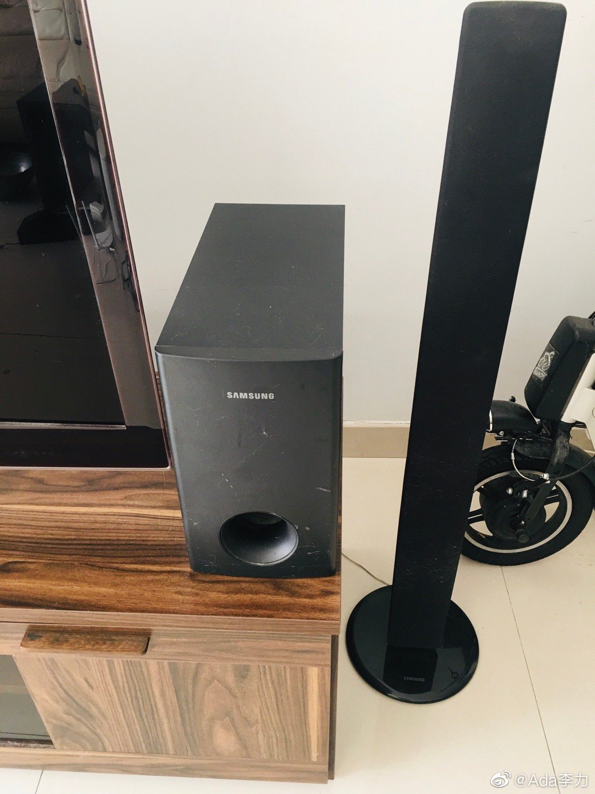

#不明所以#
因为要给NAS+UPS腾出空间，以及接电源和网线。在整理电视柜后面的各种接口时，发现很多都不会再用了，电话线口，有线电视口，网线口等。
音频接口虽然线和音响设备都在，但买回来就没用过几次。因为配套的音源是DVD机，用起来相当繁琐。目前我在家最常用的是个蓝牙音箱。
也就十年时间，过时的东西太多了。
整理这些接口和线材是个大工程，所以要陆博士出马，毕竟当初这些是他负责设计和监理的。
因为要给NAS+UPS腾出空间，以及接电源和网线。在整理电视柜后面的各种接口时，发现很多都不会再用了，电话线口，有线电视口，网线口等。
音频接口虽然线和音响设备都在，但买回来就没用过几次。因为配套的音源是DVD机，用起来相当繁琐。目前我在家最常用的是个蓝牙音箱。
也就十年时间，过时的东西太多了。
整理这些接口和线材是个大工程，所以要陆博士出马，毕竟当初这些是他负责设计和监理的。

- 